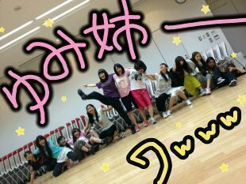
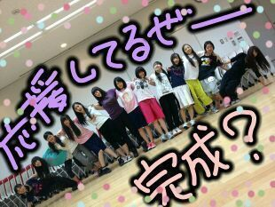

ほっほーい★
ろってぃーでぇす♪
今日は メンバー皆
ゆみ姉のことだよね。
まひろも書きます´｀
乃木坂46 岩瀬佑美子が
卒業することが
決定いたしました。
ゆみ姉かあ...
何だろうなあ...´_`
ゆみ姉は ほんっっっとに、
色々 たっくさん考えてたと
思います。
仕事中では
色々としきってくれて
皆 ゆみ姉に頼ったりもして
必要な存在だった。
でも何か
考えてるなぁ〜
何か 悩みかかえてそうだなあ・_・｀?
って 思ってました。
そして ゆみ姉が
卒業しちゃうかもしれない。
卒業することになった。と
聞いた時は、
ああ、やっぱずっと
佑美姉 すごく悩み続けてたんだ。
って思いました。
ゆみ姉は 最年長でね
いつも笑ってメンバーを
見守ってくれてる気がして
それに、
突っ込んでくれる時は
おもいっきり
突っ込み入れてくれて
気持ちいし
めちゃくちゃ
ゲーマーだしさあ
ほんと なんだ*^^*?
最高ぢゃねいかぁー♪
本当、辛いことも
一緒にたくさん乗り越えて
たくさんの壁に体当たりしたよね
(T-T)
ゆみ姉っ!!
夢に向かって全力で頑張って★!
本間にまひろらは
応援してるっ^^
ほら見てっ!!
皆 めっちゃ元気やでっ★☆★

こんな おかしなメンバーだけど
やる時はやるぜえっ?
ゆみ姉のこと皆
心から大好きだぜぃ〃ω〃
......

いつでも顔出してください。
ご飯とかも行こう?
写メもとろーう*^ω^*
話も聞いてー♪
あっ! あと
ゆみ姉の歌
もっと聴きたいなぁ〜〜 笑?
ゆみねいぃ〜?´・ω・)))
卒業してもよろしくお願いします
=^ω^=
おやすみなさい♪